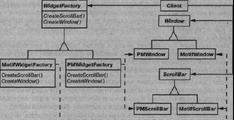
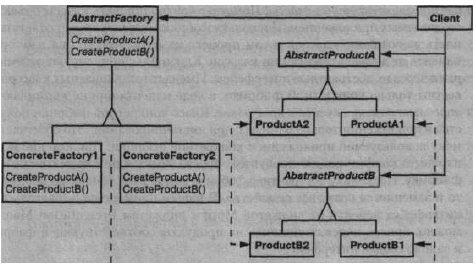

Паттерн Abstract Factory
Название и классификация паттерна
Абстрактная фабрика - паттерн, порождающий объекты.
Назначение
Предоставляет интерфейс для создания семейств взаимосвязанных или взаимозависимых объектов, не специфицируя их конкретных классов.
Известен также под именем
Kit (инструментарий).
Мотивация
Рассмотрим инструментальную программу для создания пользовательского интерфейса, поддерживающего разные стандарты внешнего облика, например Motif и Presentation Manager. Внешний облик определяет визуальное представление и поведение элементов пользовательского интерфейса («виджетов») - полос прокрутки, окон и кнопок. Чтобы приложение можно было перенести на другой стандарт, в нем не должен быть жестко закодирован внешний облик виджетов. Если инстанцирование классов для конкретного внешнего облика разбросано по всему приложению, то изменить облик впоследствии будет нелегко.
Мы можем решить эту проблему, определив абстрактный класс WidgetFac tory, в котором объявлен интерфейс для создания всех основных видов виджетов. Есть также абстрактные классы для каждого отдельного вида и конкретные подклассы, реализующие виджеты с определенным внешним обликом. В интерфейсе WidgetFactory имеется операция, возвращающая новый объект-виджет для каждого абстрактного класса виджетов. Клиенты вызывают эти операции для получения экземпляров виджетов, но при этом ничего не знают о том, какие имен¬но классы используют. Стало быть, клиенты остаются независимыми от выбран¬ного стандарта внешнего облика.
Для каждого стандарта внешнего облика существует определенный подкласс WidgetFactory. Каждый такой подкласс реализует операции, необходимые для создания соответствующего стандарту виджета. Например, операция Great eScrollBar в классе Mot ifWidget Fac tory инстанцирует и возвращает полосу прокрутки в стандарте Motif, тогда как соответствующая операция в классе PMWidgetFactory возвращает полосу прокрутки в стандарте Presentation Manager. Клиенты созда¬ют виджеты, пользуясь исключительно интерфейсом WidgetFactory, и им ни¬чего не известно о классах, реализующих виджеты для конкретного стандарта. Другими словами, клиенты должны лишь придерживаться интерфейса, определенного абстрактным, а не конкретным классом.
Класс Widget Factory также устанавливает зависимости между конкретными классами виджетов. Полоса прокрутки для Motif должна использоваться с кнопкой и текстовым полем Motif, и это ограничение поддерживается автоматически, как следствие использования класса Mot ifWidgetFactory.
Применимость
Используйте паттерн абстрактная фабрика, когда:
- система не должна зависеть от того, как создаются, компонуются и пред-ставляются входящие в нее объекты;
- входящие в семейство взаимосвязанные объекты должны использоваться вместе и вам необходимо обеспечить выполнение этого ограничения;
- система должна конфигурироваться одним из семейств составляющих ее объектов;
- вы хотите предоставить библиотеку объектов, раскрывая только их интер¬фейсы, но не реализацию.
Структура
Участники
- a AbstractFactory (WidgetFactory) - абстрактная фабрика:
- - объявляет интерфейс для операций, создающих абстрактные объекты- продукты;
- a ConcreteFactory (Mot ifWidgetFactory, PMWidgetFactory) - конкрет¬ная фабрика:
- - реализует операции, создающие конкретные объекты-продукты; a AbstractProduct (Window, ScrollBar) - абстрактный продукт: - объявляет интерфейс для типа объекта-продукта;
- a ConcreteProduct (Mot ifWindow, Mot ifScrollBar) - конкретный продукт:
- - определяет объект-продукт, создаваемый соответствующей конкретной фабрикой;
- - реализует интерфейс Abstract Product;
- a Client - клиент:
- - пользуется исключительно интерфейсами, которые объявлены в классах AbstractFactory и AbstractProduct.
Отношения
- Обычно во время выполнения создается единственный экземпляр класса ConcreteFactory. Эта конкретная фабрика создает объекты-продукты, имеющие вполне определенную реализацию. Для создания других видов объектов клиент должен воспользоваться другой конкретной фабрикой;
- AbstractFactory передоверяет создание объектов-продуктов своему подклассу ConcreteFactory.
Результаты
Паттерн абстрактная фабрика обладает следующими плюсами и минусами:
- изолирует конкретные классы. Помогает контролировать классы объектов, создаваемых приложением. Поскольку фабрика инкапсулирует ответственность за создание классов и сам процесс их создания, то она изолирует клиента от деталей реализации классов. Клиенты манипулируют экземплярами через их абстрактные интерфейсы. Имена изготавливаемых классов известны только конкретной фабрике, в коде клиента они не упоминаются;
- упрощает замену семейств продуктов. Класс конкретной фабрики появляется в приложении только один раз: при инстанцировании. Это облегчает замену используемой приложением конкретной фабрики. Приложение может изменить конфигурацию продуктов, просто подставив новую конкретную фабрику. Поскольку абстрактная фабрика создает все семейство продуктов, то и заменяется сразу все семейство. В нашем примере пользовательского интерфейса перейти от виджетов Motif к виджетам Presentation Manager можно, просто переключившись на продукты соответствующей фабрики и заново создав интерфейс;
- гарантирует сочетаемость продуктов. Если продукты некоторого семейства спроектированы для совместного использования, то важно, чтобы приложение в каждый момент времени работало только с продуктами единственного семейства. Класс AbstractFactory позволяет легко соблюсти это ограничение;
- поддержать новый вид продуктов трудно. Расширение абстрактной фабрики для изготовления новых видов продуктов - непростая задача. Интерфейс AbstractFactory фиксирует набор продуктов, которые можно создать. Для поддержки новых продуктов необходимо расширить интерфейс фабрики, то есть изменить класс AbstractFactory и все его подклассы. Решение этой проблемы мы обсудим в разделе «Реализация».
Реализация
Вот некоторые полезные приемы реализации паттерна абстрактная фабрика:
- фабрики как объекты, существующие в единственном экземпляре. Как правило, приложению нужен только один экземпляр класса ConcreteFactory на каждое семейство продуктов. Поэтому для реализации лучше всего применить паттерн одиночка;
- создание продуктов.Класс AbstractFactory объявляет только интерфейс для создания продуктов. Фактическое их создание - дело подклассов ConcreteProduct.
Чаще всего для этой цели определяется фабричный метод для каждого продукта (см. паттерн фабричный метод).
Конкретная фабрика специфицирует свои продукты путем замещения фабричного метода для каждого из них.
Хотя такая реализация проста, она требует создавать новый подкласс конкретной фабрики для каждого семейства продуктов, даже если они почти ничем не отличаются.
Если семейств продуктов может быть много, то конкретную фабрику удастся реализовать с помощью паттерна прототип.
В этом случае она инициализируется экземпляром-прототипом каждого продукта в семействе и создает новый продукт путем клонирования этого прототипа.
Подход на основе прототипов устраняет необходимость создавать новый класс конкретной фабрики для каждого нового семейства продуктов.
Вот как можно реализовать фабрику на основе прототипов в языке Smalltalk. Конкретная фабрика хранит подлежащие клонированию прототипы в словаре
под названием partCatalog. Метод make: извлекает прототип и клонирует его:
make: partName ^ (partCatalog at: partName) copyУ конкретной фабрики есть метод для добавления деталей в каталог:
addPart: partTemplate named: partName partCatalog at: partName put: partTemplateПрототипы добавляются к фабрике путем идентификации их символом:
aFactory addPart: aPrototype named: #ACMEWidget
В языках, где сами классы являются настоящими объектами (например, Smalltalk и Objective С), возможны некие вариации подхода на базе прототипов. В таких языках класс можно представлять себе как вырожденный случай фабрики, умеющей создавать только один вид продуктов. Можно хранить классы внутри конкретной фабрики, которая создает разные конкретные продукты в переменных. Это очень похоже на прототипы. Такие классы создают новые экземпляры от имени конкретной фабрики. Новая фабрика инициализируется экземпляром конкретной фабрики с классами продуктов, а не путем порождения подкласса. Подобный подход задействует некоторые специфические свойства языка, тогда как подход, основанный на прототипах, от языка не зависит.
Как и для только что рассмотренной фабрики на базе прототипов в Smalltalk, в версии на основе классов будет единственная переменная экземпляра partCatalog, представляющая собой словарь, ключом которого является название детали. Но вместо хранения подлежащих клонированию прототипов partCatalog хранит классы продуктов. Метод make: выглядит теперь следующим образом:
make: partName 4 (partCatalog at: partName) new - определение расширяемых фабрик. Класс AbstractFactory обычно определяет разные операции для каждого вида изготавливаемых продуктов.
Виды продуктов кодируются в сигнатуре операции. Для добавления нового вида продуктов нужно изменить интерфейс класса AbstractFactory и всех зависящих от него классов.
Более гибкий, но не такой безопасный способ - добавить параметр к операциям, создающим объекты. Данный параметр определяет вид создаваемого объекта. Это может быть идентификатор класса, целое число, строка или что-то еще, однозначно описывающее вид продукта. При таком подходе классу AbstractFactory нужна только одна операция Make с параметром, указывающим тип создаваемого объекта. Данный прием применялся в обсуждавшихся выше абстрактных ф абриках на основе прототипов и классов. Такой вариант проще использовать в динамически типизированных языках вроде Smalltalk, нежели в статически типизированных, каким является C++. Воспользоваться им в C++ можно только, если у всех объектов имеется об¬щий абстрактный базовый класс или если объекты-продукты могут быть безопасно приведены к корректному типу клиентом, который их запросил. В разделе «Реализация» из описания паттерна фабричный метод показано, как реализовать такие параметризованные операции в C++.
Но даже если приведение типов не нужно, остается принципиальная проблема: все продукты возвращаются клиенту одним и тем же абстрактным интерфейсом с уже определенным типом возвращаемого значения. Клиент не может ни различить классы продуктов, ни сделать какие-нибудь предположения о них. Если клиенту нужно выполнить операцию, зависящую от подкласса, то она будет недоступна через абстрактный интерфейс. Хотя клиент мог бы выполнить динамическое приведение типа (например, с помощью оператора dynamic_cas t в C++), это небезопасно и необязательно заканчивается успешно. Здесь мы имеем классический пример компромисса между высокой степенью гибкости и расширяемостью интерфейса.
Пример кода
Паттерн абстрактная фабрика мы применим к построению обсуждавшихся в начале этой главы лабиринтов.
Класс Maze Factory может создавать компоненты лабиринтов. Он строит комнаты, стены и двери между комнатами. Им разумно воспользоваться из программы, которая считывает план лабиринта из файла, а затем создает его, или из приложения, строящего случайный лабиринт. Программы построения лабиринта принимают MazeFactory в качестве аргумента, так что программист может сам указать классы комнат, стен и дверей:
class MazeFactory {
public:
MazeFactory();
virtual Maze* MakeMazeO const
{ return new Maze; }
virtual Wall* MakeWalK) const
{ return new Wall; }
virtual Room* MakeRoom(int n) const
{ return new Room(n); }
virtual Door* MakeDoor(Room* rl, Room* r2) const
{ return new Door(rl, r2); }
};
Напомним, что функция-член CreateMaze строит небольшой лабиринт, состоящий всего из двух комнат, соединенных одной дверью. В ней жестко «зашиты» имена классов, поэтому воспользоваться функцией для создания лабиринтов с другими компонентами проблематично.
Вот версия CreateMaze, в которой нет подобного недостатка, поскольку она принимает MazeFactory в качестве параметра:
Maze* MazeGame::CreateMaze (MazeFactory& factory) {
Maze* aMaze = factory.MakeMaze();
Room* rl = factory.MakeRoom(l);
Room* r2 = factory.MakeRoom(2);
Door* aDoor = factory.MakeDoor(rl, r 2 );
aMaze->AddRoom(rl.);
aMaze->AddRoom(r2);
rl->SetSide(North, factory.MakeWall());
rl->SetSide(East, aDoor);
rl->SetSide(South, factory.MakeWall()) ;
rl->SetSide(West, factory.MakeWall());
r2->SetSide(North, factory.MakeWall());
r2->SetSide(East, factory.MakeWall());
r2->SetSide(South, factory.MakeWall());
r2->SetSide(West, aDoor);
return aMaze;
}
Мы можем создать фабрику Enchant edMazeFactory для производства волшебных лабиринтов, породив подкласс от MazeFactory. В этом подклассе замещены различные функции-члены, так что он возвращает другие подклассы классов Room, Wall и т.д.:
class EnchantedMazeFactory : public MazeFactory {
public:
EnchantedMazeFactory();
virtual Room* MakeRoom(int n) const
{ return new EnchantedRoom(n, CastSpell() ) ; }
virtual Door* MakeDoor(Room* rl, Room* r2) const
{ return new DoorNeedingSpell(rl, r2); }
protected:
Spell* CastSpell() const;
};
А теперь предположим, что мы хотим построить для некоторой игры лабиринт, в одной из комнат которого заложена бомба. Если бомба взрывается, то она как минимум обрушивает стены. Тогда можно породить от класса Room подкласс, отслеживающий, есть ли в комнате бомба и взорвалась ли она. Также нам понадобится подкласс класса Wall, который хранит информацию о том, был ли нанесен ущерб стенам. Назовем эти классы соответственно RoomWithABomb и BombedWall.
И наконец, мы определим класс BombedMazeFactory, являющийся подклассом BombedMazeFactory, который создает стены класса BombedWall и комнаты класса RoomWithABomb. В этом классе надо переопределить всего две функции:
Wall* BombedMazeFactory::MakeWall () const {
return new BombedWall;
}
Room* BombedMazeFactory::MakeRoom(int n) const {
return new RoomWithABomb(n);
}
Для того чтобы построить простой лабиринт, в котором могут быть спрятаны бомбы, просто вызовем функцию CreateMaze, передав ей в качестве параметра BombedMazeFactory:
MazeGame game;
BombedMazeFactory factory/-
game. CreateMaze (factory) ;
Для построения волшебных лабиринтов CreateMaze может принимать в качестве параметра и EnchantedMazeFactory.
Отметим, что MazeFactory - всего лишь набор фабричных методов. Это самый распространенный способ реализации паттерна абстрактная фабрика. Еще заметим, что MazeFactory - не абстрактный класс, то есть он работает и как AbstractFactory, и как ConcreteFactory. Это еще одна типичная реализация для простых применений паттерна абстрактная фабрика. Поскольку MazeFactory - конкретный класс, состоящий только из фабричных методов, легко получить новую фабрику MazeFactory, породив подкласс и замес¬тив в нем необходимые операции.
В функции CreateMaze используется операция SetSide для описания сторон комнат. Если она создает комнаты с помощью фабрики BombedMazeFactory, то лабиринт будет составлен из объектов класса RoomWithABomb, стороны которых описываются объектами класса BombedWall. Если классу RoomWithABomb потребуется доступ к членам BombedWall, не имеющим аналога в его предках, то придется привести ссылку на объекты-стены от типа Wall* к типу BombedWall*. Такое приведение к типу подкласса безопасно при условии, что аргумент действи¬тельно принадлежит классу BombedWall*, а это обязательно так, если стены создаются исключительно фабрикой BombedMazeFactory.
В динамически типизированных языках вроде Smalltalk приведение, разумеется, не нужно, но будет выдано сообщение об ошибке во время выполнения, если объект/класса Wai 1 встретится вместо ожидаемого объекта подкласса класса Wai 1. Использование абстрактной фабрики для создания стен предотвращает такие ошибки, гарантируя, что могут быть созданы лишь стены определенных типов.
Рассмотрим версию MazeFactory на языке Smalltalk, в которой есть единственная операция make, принимающая вид изготавливаемого объекта в качестве параметра. Конкретная фабрика при этом будет хранить классы изготавливаемых объектов.
Для начала напишем на Smalltalk эквивалент CreateMaze:
createMaze: aFactory
| rooml room2 aDoor |
rooml := (aFactory make: #room) number: 1.
room2 := (aFactory make: #room) number: 2.
aDoor := (aFactory make: #door) from: rooml to: room2.
rooml atSide: #north put: (aFactory make: #wall).
rooml atSide: #east put: aDoor.
rooml atSide: #south put: (aFactory make: #wall).
rooml atSide: #west put: (aFactory make: #wall).
room2 atSide: #north put: (aFactory make: #wall).
room2 atSide: #east put: (aFactory make: #wall).
room2 atSide: #south put: (aFactory make: #wall).
room2 atSide: #west put: aDoor.
^ Maze new addRoom: rooml; addRoom: room2; yourself
В разделе «Реализация» мы уже говорили о том, что классу MazeFactory нужна всего одна переменная экземпляра partCatalog, предоставляющая словарь, в котором ключом служит класс компонента. Напомним еще раз реализацию метода make:
make:partName
^ (partCatalog at: partName) new
Теперь мы можем создать фабрику MazeFactory и воспользоваться ей для реализации createMaze. Данную фабрику мы создадим с помощью метода createMazeFactory класса MazeGame:
createMazeFactory
^ (MazeFactory new
addPart: Wall named: #wall;
addPart: Room named: #room;
addPart: Door named: #door;
yourself)
BombedMazeFactory и EnchantedMazeFactory создаются путем ассоциирования других классов с ключами. Например, EnchantedMazeFactory можно создать следующим образом:
createMazeFactory
^ (MazeFactory new
addPart: Wall named: #wall; addPart: EnchantedRoom named: #room;
addPart: DoorNeedingSpell named: #door;
yourself)
Известные применения
В библиотеке Interviews [Lin92] для обозначения классов абстрактных фабрик используется суффикс «Kit». Так, для изготовления объектов пользовательского интерфейса с заданным внешним обликом определены абстрактные фабрики WidgetKit и DialogKit. В Interviews есть также класс Lay out Kit, который генерирует разные объекты композиции в зависимости от того, какая требуется стратегия размещения. Например, размещение, которое концептуально можно было бы назвать «в строку», может потребовать разных объектов в зависимости от ориентации документа (книжной или альбомной).
В библиотеке ЕТ++ [WGM88] паттерн абстрактная фабрика применяется для достижения переносимости между разными оконными системами (например, X Windows и SunView). Абстрактный базовый класс WindowSystem определяет интерфейс для создания объектов, которое представляют ресурсы оконной системы (MakeWindow, MakeFont, MakeColor и т.п.). Его конкретные подклассы реализу¬ют эти интерфейсы для той или иной оконной системы. Во время выполнения ЕТ++ создает экземпляр конкретного подкласса WindowSystem, который уже и порождает объекты, соответствующие ресурсам данной оконной системы.
Родственные паттерны
Классы Abstract Factory часто реализуются фабричными методами (см. паттерн фабричный метод), но могут быть реализованы и с помощью паттерна прототип.
Конкретная фабрика часто описывается паттерном одиночка.